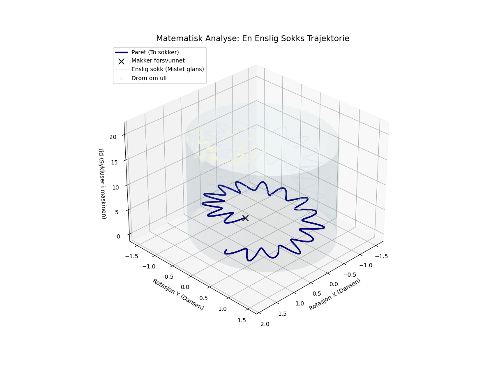

En enslig sokk i vaskemaskinens dans, mistet sin makker og all sin glans. Nå drømmer den stille om ull og om fot, mens den venter på mirakler i en fuktig grot.

import numpy as np
import matplotlib.pyplot as plt
from mpl_toolkits.mplot3d import Axes3D
# Definer filsti for lagring
output_path = 'enslig_sokk_matematisk.png'
# Opprett figur og 3D-akse
fig = plt.figure(figsize=(12, 9))
ax = fig.add_subplot(111, projection='3d')
# Parametere for simuleringen (tiden/syklusene)
# Vi simulerer en vaskesyklus
t = np.linspace(0, 6 * np.pi, 1000)
separation_point = int(len(t) * 0.35) # Tidspunktet sokken mister makkeren
# --- Visuell representasjon av "Vaskemaskinens grot" (Sylinderen) ---
theta_cave = np.linspace(0, 2 * np.pi, 50)
z_cave = np.linspace(0, 6 * np.pi, 50)
theta_grid, z_grid = np.meshgrid(theta_cave, z_cave)
r_cave = 1.5
x_cave = r_cave * np.cos(theta_grid)
y_cave = r_cave * np.sin(theta_grid)
# Tegn "Grotten" med en fuktig blåaktig farge og lav opasitet
ax.plot_surface(x_cave, y_cave, z_grid, alpha=0.1, color='lightblue', rstride=2, cstride=2)
# --- Matematisk modell av sokkenes dans ---
# Legger til støy og svingninger for å simulere den kaotiske dansen
freq_main = 1.0
freq_spin = 15.0 # Høyfrekvent spinning
radius = 1.0 + 0.2 * np.sin(freq_spin * t) + 0.05 * np.cos(23 * t)
x = radius * np.cos(freq_main * t)
y = radius * np.sin(freq_main * t)
z = t
# --- Paret (Før separasjon) ---
# To sokker beveger seg synkront (identiske grafer)
ax.plot(x[:separation_point], y[:separation_point], z[:separation_point],
color='navy', linewidth=2.5, label='Paret (To sokker)')
ax.plot(x[:separation_point], y[:separation_point], z[:separation_point],
color='navy', linewidth=2.5) # Tegner den andre litt tykkere for å vise det er to
# --- Separasjonen (Mister makker) ---
# Partneren forsvinner brått
ax.scatter(x[separation_point], y[separation_point], z[separation_point],
color='black', s=100, marker='x', label='Makker forsvunnet')
# --- Den Enslige Sokken (Etter separasjon) ---
# Mister glans: Fargen blekner og linjetykkelse minker
# Ensomhet og drømmer: Bevegelsen blir mer uregelmessig eller 'drømmende'
t_lonely = t[separation_point:]
x_lonely = x[separation_point:]
y_lonely = y[separation_point:]
z_lonely = z[separation_point:]
# Tegn den enslige sokken med falmede farger (mistet glans)
ax.plot(x_lonely, y_lonely, z_lonely, color='lavender', linewidth=1.0, alpha=0.8, label='Enslig sokk (Mistet glans)')
# --- Drømmen om ull og fot (Abstrakt visualisering) ---
# En "sky" av støyende punkter som representerer drømmen om ull (tekstur)
n_dreams = 100
dream_z = np.linspace(z_lonely[-1], z_lonely[-1] + 2, n_dreams)
dream_r = np.linspace(0.2, 0.8, n_dreams)
dream_theta = np.random.uniform(0, 2*np.pi, n_dreams)
dream_x = dream_r * np.cos(dream_theta) + x_lonely[-1]
dream_y = dream_r * np.sin(dream_theta) + y_lonely[-1]
ax.scatter(dream_x, dream_y, dream_z, color='beige', alpha=0.5, s=20, label='Drøm om ull')
# --- Formatering og Estetikk ---
ax.set_facecolor('white')
ax.set_title("Matematisk Analyse: En Enslig Sokks Trajektorie", fontsize=14)
ax.set_xlabel("Rotasjon X (Dansen)")
ax.set_ylabel("Rotasjon Y (Dansen)")
ax.set_zlabel("Tid (Sykluser i maskinen)")
# Juster visning
ax.view_init(elev=30, azim=45)
ax.legend(loc='upper left', frameon=True)
# Lagre figuren
plt.savefig(output_path)execution_ok=True fallback_used=False image_ok=True